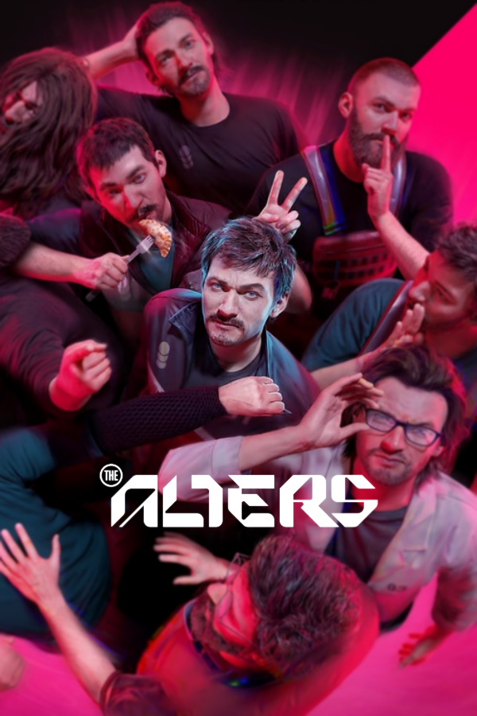

The Alters
Every archived year-end list appearance, including placement and points earned.
About the Game
Man cannot remake himself without suffering, for he is both the marble and the sculptor - Alexis Carrel This is the story of Jan Dolski, a simple worker facing circumstances that lead him to a life-changing crossroads. Crash landing on a distant planet, stranded and alone, Jan finds himself in a daunting life and death situation. His only hope for survival is to bring helping hands on board. Not yet understanding the weight of his choice, Jan must create alternate versions of himself if he is to forge ahead: the alters. The Alters is a game about life-changing moments. Those binary decisions that happen in nanoseconds, but have influence over your entire life. It is about looking into yourself, into your past, and discovering that you are who you are as a sum of those numerous choices. And when you do that a fundamental question arises: WHAT IF…? What If I altered my life? What if I took a different path? Who would I be? What would I say to a different me? What could I learn if I talked to my altered selves? What if I talk to my many selves at once?! What if…? Forged in the spirit of meaningful entertainment: a unique philosophy of creation by the award-winning team, the makers of This War of Mine and Frostpunk.
| Released | 2025-06-13 |
|---|---|
| Developer | 11 Bit Studios |
| Publisher | 11 bit studios |
| Genres | Adventure |
| Platforms | PC, Xbox Series S/X, PlayStation 5 |
SingleplayerSteam AchievementsFull controller supportSteam CloudThird PersonSci-fiExplorationSurvivalAction-AdventureSpaceWar3D
Where to Buy
Game information provided by RAWG.
Points by Year
List History
| Year | Source | List | Placement | Points |
|---|---|---|---|---|
| 2025 | GameSpot | The Best Games Of 2025 | Unranked | 1 |
| 2025 | Geeky Brummie | Top 50 Most Notable Games of 2025 | 27 | 1 |
| 2025 | NPR | The best games of 2025, picked by NPR's staff | Unranked | 1 |
| 2025 | Polygon | The 50 best games of 2025, as chosen by Polygon | 32 | 1 |
| 2025 | TechRadar | TechRadar Gaming’s Game of the Year list 2025: our top 20 games from this year | 13 | 3 |
| 2025 | The Review Geek | 15 Best Video Games of 2025 | TheReviewGeek Recommends | 15 | 3 |
| 2025 | WayTooManyGames | Top 20 Best Games of 2025 | 18 | 3 |